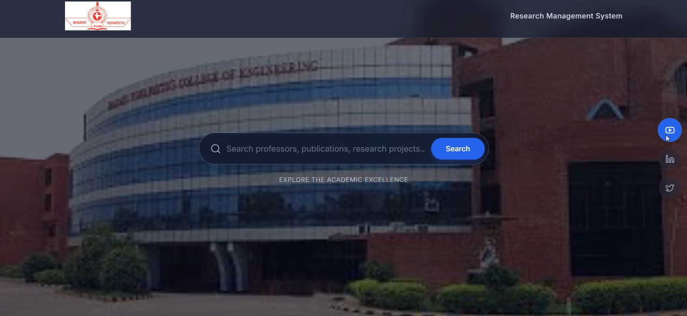

Research Management System
HTML
javascript
Tailwind CSS
A web-based Research Management System designed to manage and organize research-related data of all professors within a college. The system provides a centralized platform to store, update, and access faculty research profiles efficiently.